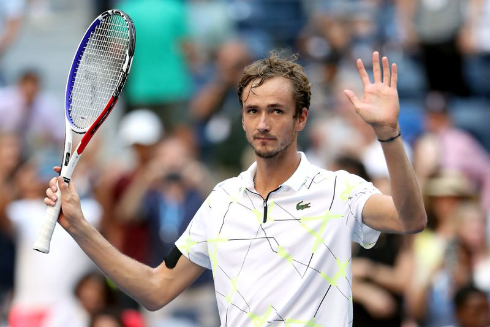

Risky tactics help Medvedev defeat Thiem

Daniil Medvedev's victory over Dominic Thiem in the ATP Finals 2020 final has an important mark of the pitching strategy.
Usually, players only get to the net after a strong, thunderous serve, forcing opponents to move and return the ball hard. But in the ATP Finals final, Daniil Medvedev opted to go back into the net after a second serve. The amazing thing is that the Russian player has succeeded six out of seven times to execute this tactic. Going into the net at crucial moments after the second serve was a gamble and Medvedev won with calculated recklessness.
When the score was 3-3 in the second set, Medvedev took delivery and was led 30-40. He failed the first serve and the second had only 134 km / h. The slow ball gives Thiem enough time to choose a position before launching a strong forehand. However, Medvedev now overflowed with nets to catch the volley. Thiem moved up the net in time, but he missed the line and Medvedev successfully saved the break-point.
That was the typical situation for Medvedev's recklessness this match. If the ball fails, Medvedev will lose the game and most likely lose after only two sets. Including the match, the world's number four player served 16 times and scored 13 times. The more difficult times, facing the risk of losing the game, the more Medvedev going up the net to reverse the situation in his own favor.
He did it in the tie-break series, where there was little chance of correcting a mistake. And not only in the delivery game, Medvedev also goes to the net in the game to catch the ball. When Thiem took delivery at a score of 2-3 of the second tie-break set, Medvedev blocked the opponent's second ball with a left shot to the corner, then immediately overflowed. After a moment of startled, Thiem cut the ball to tuck the net and lost another mini-break. Since that crucial score, Medvedev scored a three-point streak to win 7-2 in the match.